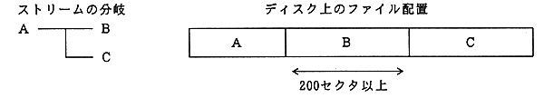
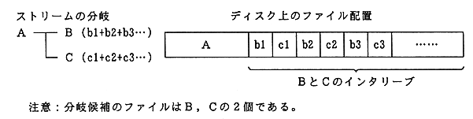
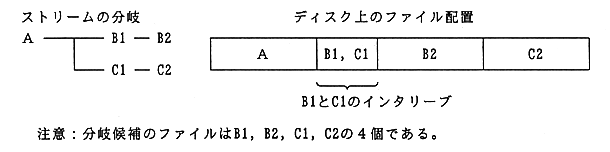

Return to previous page ｜ Return to menu ｜ Go to next page
-
4. File placement on disk
- The total number of streams that can be prefetched is up to the CD buffer capacity (up to 200 sectors). Therefore, a stream that exceeds its capacity and cannot be prefetched cannot be branched without delay.
-
(1) Non-interleaved branch candidates
- If the branch candidates for A are B and C and the file layout on the disk is as shown in Figure 4.1, only B can be prefetched.
だ け There is no problem as long as only the pre-read portion of A seeks and branches to B and C in time. However, if it is necessary to prefetch both B and C in order to delay the branch selection timing, this example can branch to C without delay.

Figure 4.1: Non-interleaved branch candidates (C cannot be prefetched)
-
(2) Overall interleaving of branch candidates
- After playback of A, to branch to B and C without delay, there is a method of interleaving B and C after A as shown in Figure 4.2.

Figure 4.2: Overall interleaving of branch candidates (all B and C)
-
(3) Partial interleaving of branch candidates
- As shown in Figure 4.3, there is a method of dividing B into B1 and B2, C into C1 and C2, and interleaving only B1 and C1.
In this case, only a part of B and C (B1, C1) needs to be interleaved, and seeking to B2 and C2 is possible and independence is high. However, file division is required.

Figure 4.3 Partial interleaving of branch candidates (parts of B and C)
Return to previous page ｜ Return to menu ｜ Go to next page